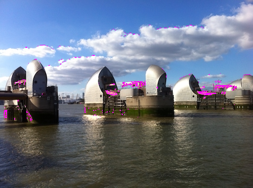

##! Additional Points
There are a few things worth mentioning at the end.
###! External JSX
_Depack_ doesn't transpile JSX in published packages, therefore they need to make sure their published code is transpiled into standard JavaScript with `h` pragma calls. This can be done with _ÀLaMode_. For example, the ``@depack/form`` package is a library to create Bootstrap forms that was written in JSX, e.g.,
```jsx
import { Component } from 'preact'
export default class Form extends Component {
// ... component code
render(props) {
const { children, formRef, onSubmit, onChange, ...prop } =
/** @type {!_depackForm.FormProps} */ (props)
return
}
}
```
It is then transpiled into the *build* folder, however ``imports`` stay as imports, and don't become `require` calls. If we were publishing back-end components, we'd also transpile ``imports`` but since Closure can understand them, we keep it.
```js
import { h } from 'preact'
import { Component } from 'preact'
export default class Form extends Component {
// ... component code
render(props) {
const { children, formRef, onSubmit, onChange, ...prop } =
/** @type {!_depackForm.FormProps} */ (props)
return h('form',{...prop,'ref':formRef, 'onSubmit':onSubmit},
children,
)
}
}
```
However, because we want _Closure_ to read the transpiled code, our ``module`` field should really point to the *build* dir (module takes precedence over main in _Depack_):
```json
{
"main": "src/index.jsx",
"module": "build/index.js"
}
```
And the ``main`` will point to the source code, which is not really necessary, but I think `frontend` at the moment still reads the `main` field, and will be able to transpile the source code (I now realise this is redundant, and `main` should probably become require-transpiled code for server-side rendering 👍).
Another question is how to test front-ends with _NodeTools_. As I said, I'm only working on the next version right now, but there is are a few strategies for testing, that is, server-side rendering of components, and also using headless chrome to render components in Chrome, and then get the snapshot of the DOM and send it back to the server for comparison against snapshots.
###! SSR Testing
For basic testing of components written in _Preact_, you can take advantage of the [_JSXContext_](https://github.com/dpck/context) that can transform an input string into a JSX VNode, that can then be rendered. Using this method, you can declare your components using simple HTML from masks, and compare rendered result to the expected output.
```js
// test/mask/default.js
import makeTestSuite from '@zoroaster/mask'
import JSXContext from '@depack/context'
import Form, * as Form2 from '../../src'
export default makeTestSuite('test/result/default', {
/**
* @param {JSXContext} context
*/
getResults({ getVNode, render }) {
const vnode = getVNode(this.input, {
Form, ...Form2,
})
const res = render(vnode, {
pretty: true,
})
return `(${res})`
}
})
```
The mask result in JSX format will then use a preamble to import components for syntax highlighting and auto-completions, and define inputs as JSX methods and outputs as HTML code. I've surrounded each block with `()` so that there's no syntax errors underlined with red in the file. Mask results are used only to define inputs/outputs, so despite the fact that the format of this file is JSX, it's only so to enable syntax highlighting.
```jsx
// test/result/default/form-group.jsx
import { TextArea, Select, Form, FormGroup, Input } from '../../src'
// default FormGroup
()
/* expected */
(
ok
)
/**/
// details FormGroup
()
/* expected */
(
ok
)
/**/
```
###! Headless Chrome
The second strategy, is to spawn a headless browser as a background process, setup a server that will return some HTML with script tags that invoke JavaScript to render certain components on elements. Each test will open a new page, with slightly different setup routine, wait for JS to execute, and send the element's outer HTML back to the server. We'll use a _RemoteChrome_ context to connect to the browser:
```js
import CDP from 'chrome-remote-interface'
import { c, b } from 'erte'
export default class RemoteChrome {
async _init() {
let client
client = await CDP({
host: '127.0.0.1',
port: '9222',
})
const { Network, Page, Runtime } = client
await Network.enable()
await Page.enable()
this.client = client
this._Page = Page
this._Runtime = Runtime
this.Network = Network
console.log('[%s]: %s', c('RemoteChrome', 'red'), b('Page enabled', 'green'))
}
static get _timeout() {
return 10000
}
/**
* The enabled page, write types for that
*/
get Page() {
return this._Page
}
/**
* The runtime.
*/
get Runtime() {
return this._Runtime
}
async _destroy() {
if (this.client) {
await this.client.close()
}
}
}
```
We'll also need the _Idio_ context that will start a server to return HTML code.
```js
import idio from '@idio/idio'
import frontend from '@idio/frontend'
import render from '@depack/render'
import jsx from '@a-la/jsx'
export default class IdioContext {
/**
* The context will start a server and serve the code given
* @param {import('@idio/idio').MiddlewareConfig} config
*/
async start(config = {}, port = null) {
const { input, pre = '', ...conf } = config
const inv = jsx(input, {
quoteProps: 'dom',
})
const pree = jsx(pre, {
quoteProps: 'dom',
})
const { app, url } = await idio({
frontend: {
async middlewareConstructor() {
const f = await frontend({
directory: ['src', 'test/context/idio', 'build'],
})
return f
},
use: true,
},
async serveJSX(ctx) {
ctx.body = render(
Hello, world!
, { addDoctype: 1, pretty: 1 })
},
...conf,
}, { port })
this.app = app
this.url = url
return this.url
}
async _destroy() {
if (this.app)
await this.app.destroy()
}
}
```
This context includes some utilities on the page, for example, [for formatting](https://github.com/dpck/form/blob/aa9d5137ca5535e46d8c71056c03e81ab2ff4da7/test/context/idio/format.js), and calls Preact's render method on the invocation passed from tests. The mask setup is then the following:
```js
import makeTestSuite from '@zoroaster/mask'
import { equal } from '@zoroaster/assert'
import IdioContext from '../context/Idio'
import RemoteChrome from '../context/RemoteChrome'
export const Chrome = makeTestSuite('test/result/chrome.jsx', {
/**
* @param {RemoteChrome} i
* @param {IdioContext} i
*/
async getResults({ Page, Runtime, client }, { start }) {
const { action, pre } = this
const url = await start({
pre,
input: this.input,
})
await Page.navigate({ url })
await Page.loadEventFired()
let actionValue
if (action) {
const s = await Runtime.evaluate({ expression: action,
awaitPromise: true })
handleError(s)
if (s.result) actionValue = s.result.value
}
const res = await Runtime.evaluate({ expression: 'window.idio.format(document.querySelector(\'html body\'), 0).innerHTML.trim()' })
// IF A TEST IS TIMING OUT, DEBUG MANUALLY:
// console.log('', url)
// await new Promise((r) => setTimeout(r, 1000000))
const { result: { value } } = res
const v = value.replace(/(/g, (m, i) => {
return `${i} />`
})
return { actionValue, actual: `(${v})` }
},
mapActual({ actual }) {
return actual
},
assertResults({ actionValue }, { actionValue: av }) {
if (av) equal(`'${actionValue}'`, av)
},
context: IdioContext,
persistentContext: [RemoteChrome],
})
```
The ``action`` and ``pre`` are properties of the mask result which wil be shown next. We start a server by passing these properties, and make the browser navigate to that prepared page, waiting until it's fully loaded. We then evaluate some JS from ``action`` if it was passed, and grab the `body` element from the DOM, while also formatting it using the ``format`` utility. We then return the result of the action (if it was given), and the HTML. The HTML is compared against the expected output using simple string comparison via mask result, while the action value is asserted on using the standard `equal` method from the assertion library in the mask itself.
Example mask result:
```jsx
/* eslint-env browser */
import { Component } from 'preact'
import { TextArea, Select, Form, FormGroup, Input } from '../../src'
// Form
()
/* expected */
()
/**/
// Reset
()
/* pre */
class App extends Component {
constructor() {
super()
this.state = { value: 'hello-world' }
}
render() {
const { value } = this.state
return ( {
this.setState({ value: 'new value' })
}}/>)
}
}
async function clickInput() {
const input = document.querySelector('input')
input.click()
await new Promise(r => setTimeout(r, 1))
return input.value
}
window.clickInput = clickInput
/**/
/* action */
clickInput()
/**/
/* actionValue */
'new value'
/**/
/* expected */
()
/**/
```
The first test is pretty simple rendering of an empty form element. The second test creates a component, and makes the `clickInput` method available to the window scope. When the page is loaded, via the action we click the input, which changes the state of the Form component, triggering and update of the input value because of internal logic. Because this process is async, we had to wait 1ms in the `clickInput` method, which then grabs the new value of the input, and returns it for assertion in the mask. This way, we've tested interaction with the component from a real browser. The rendered code is also compared to the expected one.
There are a few more examples that you can use for reference:
- ``Exif`` [package](https://github.com/demimonde/exif/tree/master/test) that reads metadata of files from a headless browser (the testing API is available via ``@contexts/chrome`` now). It will also start the server, prepare test pages from the mask, navigate to them, execute `window.test` method and return the result.
``exif2css`` [package](https://github.com/demimonde/exif2css/tree/master/test) that puts an image on a page, and uses its metadata EXIF information to rotate into correct position with CSS. Then, a screenshot of the page is taken using the same ``@contexts/chrome`` context, and compared against the gold standard from fixtures using ``node-resemble-js`` package that highlights the differences. The threshold for passing tests is 99%, so that if the library became broken, the similarity measure would fall below that.

I hope these examples can provide starting points for implementing your own testing routines. _NodeTools 2_ will definitely standardise browser testing.